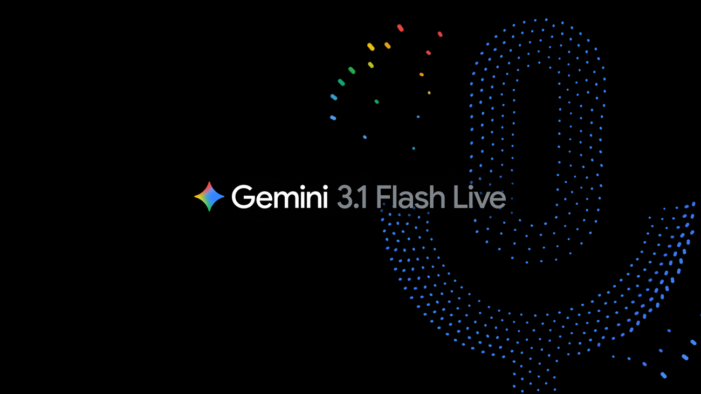

Gemini 3.1 Flash Live: Making audio AI more natural and reliable
Google가 음성 대화를 더 자연스럽고 빠르게 처리하는 `Gemini 3.1 Flash Live` 업데이트를 내놨습니다. 음성 모델이 빨라지고 덜 어색해질수록, 실시간 통역이나 보이스 인터페이스 같은 현장형 기능의 완성도가 바로 올라갑니다.
통역기 마이크를 바꿨더니, 대화가 한 박자 덜 끊기는 느낌에 가깝습니다.